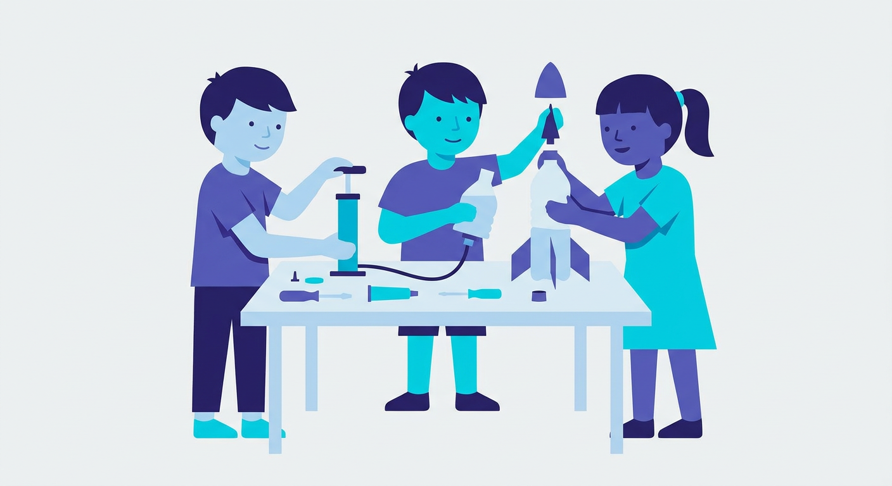
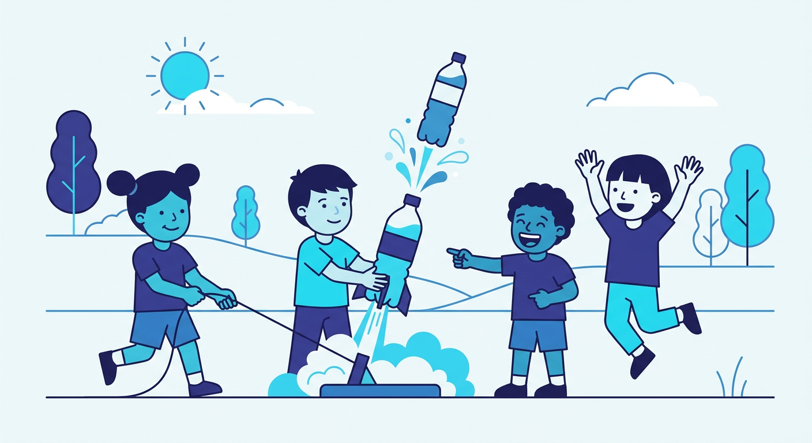

How do you teach abstract mechanics to young children across a language and sector boundary? We designed a bilingual (Chinese–English) STEM unit and delivered it as a cross-regional service-learning project — Hong Kong university students teaching primary-school children in mainland China. The water rocket becomes a safe, low-cost “living laboratory” for force, pressure and acceleration.
physics (mechanics) × engineering design × computer science (AI) × pedagogy
university ↔ primary school ↔ community — education, technology and social service
Hong Kong ↔ Jiangxi (Anyuan / Sanbaishan); bilingual delivery and cross-cultural exchange
Students can explain launch principles, pressure vs. air pressure, action–reaction, acceleration and air resistance.
Students practise hypothesis → test → optimise; variable control; data recording; engineering design.
Model a pedagogy that couples AI simulation with hands-on experiment, transferable to other STEM topics.

Learn → build → simulate → launch → reflect (five lessons, one inquiry loop)
A custom AI simulation platform acts as a pre-launch “digital twin”: students sweep water volume, air pressure and nozzle diameter to predict the optimal launch before the physical test — reducing cost and safety risk while grounding intuition in theory.
Delivered bilingually (Chinese–English) across five scaffolded lessons, co-taught by university students for primary-school learners.
Anticipated outcomes By the end of the unit, a target of [X]% of learners are expected to explain action–reaction and pressure; simulation predictions will be validated against [M] real launches.
Stakeholder impact Learners grasp core mechanics and build inquiry skills; the school & community gain a reusable, low-cost STEM module; we, as facilitators, develop transdisciplinary teamwork and cross-cultural communication.
Next steps Map every physics concept one-to-one onto build/launch steps; add academic-standard scenarios; build a student innovation zone to close the loop learn → practise → create.

